Plage formantique : 162–2 358 Hz (voyelles /u/ → /i/ avec sourdines). Formants bien définis, grande stabilité spectrale inter-dynamiques (sauf trompette).
Le cluster de convergence 450–502 Hz (zone /o/) rassemble cor (457), trombone (491), tuba contrebasse (471) — fondement acoustique des doublures classiques de la section cuivres avec le basson et le violoncelle.
Ordre des instruments : Cor · Trompette · Trombone ténor · Trombone basse · Tuba basse · Tuba contrebasse (puis sourdines).
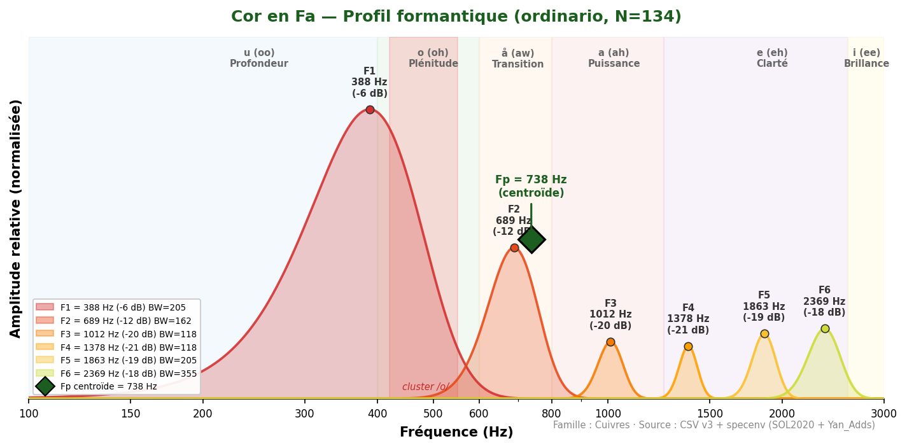
◆ Fp (centroïde) = 738 Hz
| Source | F1 (Hz) | F2 (Hz) | F3 (Hz) | F4 (Hz) | Voyelle | N | Accord |
|---|---|---|---|---|---|---|---|
| Backus (1969) | 400–500 | — | — | — | — | — | ✓ |
| Giesler (1985) | 250–500 | — | — | — | o-ähnlich | — | ✓ |
| Meyer (2009) | ~450 | ~900 | — | — | o (oh) | — | ✓ |
| SOL2020 (Fp) | 457 ±97 | 1 106 ±734 | 2 048 | — | o (oh) | 41 | note |
| Pipeline v22 | 388 | 1 071 | — | — | o/å | 134 | réf. |
| Technique | N | F1 | F2 | F3 | F4 | F5 | F6 |
|---|---|---|---|---|---|---|---|
| brassy | 43 | 474 | 754 | 1 863 | 2 218 | 3 144 | 3 962 |
| brassy_to_ordinario | 10 | 474 | 764 | 1 680 | 2 218 | 2 778 | 3 338 |
| chromatic_scale | 2 | 517 | 1 260 | — | — | — | — |
| crescendo | 45 | 463 | 743 | 1 841 | 2 455 | 2 896 | 3 790 |
| crescendo_to_decrescendo | 45 | 409 | 732 | 1 120 | 1 669 | 1 949 | 2 315 |
| decrescendo | 41 | 463 | 754 | 2 110 | 2 498 | 3 488 | 4 080 |
| flatterzunge | 111 | 441 | 818 | 1 270 | 1 636 | 1 970 | 2 326 |
| flatterzunge_stopped | 42 | 344 | 711 | 1 130 | 2 229 | 2 519 | 2 853 |
| flatterzunge_to_ordinario | 41 | 441 | 851 | 1 238 | 1 626 | 2 067 | 2 379 |
| note_lasting | 46 | 431 | 743 | 1 109 | 1 669 | 1 852 | 2 390 |
| open_to_stopped | 24 | 398 | 700 | 1 130 | 1 744 | 2 767 | — |
| ordinario | 134 | 388 | 689 | 1 012 | 1 378 | 1 863 | 2 369 |
| ordinario_to_brassy | 44 | 463 | 764 | 1 658 | 2 735 | 3 531 | 4 823 |
| ordinario_to_flatterzunge | 41 | 441 | 732 | 1 087 | 1 389 | 1 830 | — |
| sforzato | 86 | 463 | 754 | 1 163 | 1 809 | 2 153 | 2 530 |
| slap_pitched | 44 | 452 | 743 | 1 098 | 1 809 | 1 852 | 2 207 |
| staccato | 41 | 463 | 732 | 1 152 | 1 583 | 1 863 | 2 218 |
| stopped | 42 | 355 | 689 | 1 120 | 2 455 | 2 810 | 3 488 |
| stopped_to_open | 23 | 431 | 732 | 1 098 | 1 658 | 2 627 | — |
| trill_major_second_up | 16 | 452 | 861 | 1 066 | 1 303 | — | — |
| trill_minor_second_up | 40 | 409 | 689 | 1 055 | 1 324 | 1 389 | — |
| Instrument associé | F1 (instrument) | F1 (associé) | Écart | Qualité | Rapport de tessiture | Commentaire |
|---|---|---|---|---|---|---|
| Cor anglais | 388 | 452 | Δ=64 Hz | Excellente | Unisson | Cor + cor anglais — zone /o/ commune Δ=64 Hz |
| Alto | 388 | 377 | Δ=11 Hz | Quasi-parfaite | Unisson | Δ=11 Hz — convergence /o/–/å/ cuivres-cordes |
| Basson | 388 | 495 | Δ=107 Hz | Bonne | Unisson | Δ=107 Hz — zone /o/, surveiller le masquage |
| Violoncelle | 388 | 205 | Δ=183 Hz | Bonne | Octave | Cor /o/, violoncelle /u/ — complémentarité bois-cordes |
| Trombone | 388 | 237 | Δ=151 Hz | Bonne | Unisson | Cor /o/, trombone /u/ — complémentarité cuivres |
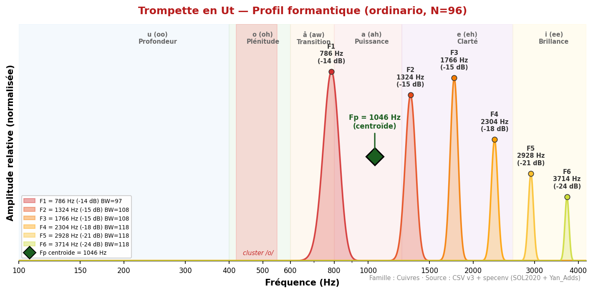
◆ Fp (centroïde) = 1046 Hz
| Source | F1 (Hz) | F2 (Hz) | F3 (Hz) | F4 (Hz) | Voyelle | N | Accord |
|---|---|---|---|---|---|---|---|
| Backus (1969) | 1 000–1 500 | ~2 000 | — | — | — | — | ~ |
| Giesler (1985) | 1 200–1 500 | — | — | — | e-ähnlich | — | ~ |
| Meyer (2009) | ~1 000 | — | — | — | a/e | — | ~ |
| SOL2020 (σ élevé) | 786 ±642 | 1 324 ±1018 | 2 588 | — | (variable) | 41 | réf. |
| Technique | N | F1 | F2 | F3 | F4 | F5 | F6 |
|---|---|---|---|---|---|---|---|
| brassy | 31 | 1 766 | 2 939 | 3 768 | 4 382 | 4 985 | 5 599 |
| brassy_to_ordinario | 7 | 2 121 | 2 832 | 3 542 | 4 404 | 4 963 | 5 480 |
| crescendo | 26 | 2 476 | 3 305 | 3 930 | 4 425 | 5 125 | 5 696 |
| crescendo_to_decrescendo | 26 | 624 | 1 034 | 1 389 | 1 841 | 2 207 | 2 638 |
| decrescendo | 29 | 2 638 | 3 531 | 4 027 | 4 393 | 5 050 | 5 642 |
| flatterzunge | 90 | 797 | 1 314 | 1 755 | 2 336 | 2 928 | 3 510 |
| flatterzunge_to_ordinario | 22 | 711 | 1 087 | 1 432 | 1 852 | 2 218 | 2 649 |
| glissando_embouchure | 1 | 452 | 1 034 | 1 357 | 2 089 | 2 433 | 3 122 |
| half_valve_glissando | 27 | 754 | 1 486 | 2 186 | 2 907 | 3 639 | 4 382 |
| harmonics_glissando | 9 | 926 | 1 583 | 1 938 | 2 444 | 2 821 | 4 145 |
| increasing_intervals_legato | 2 | 388 | 668 | 1 012 | 1 540 | 1 895 | 2 067 |
| note_lasting | 33 | 624 | 1 120 | 1 594 | 1 992 | 2 466 | 2 961 |
| ordinario | 96 | 786 | 1 324 | 1 766 | 2 304 | 2 928 | 3 714 |
| ordinario_to_brassy | 14 | 1 658 | 2 498 | 3 488 | 4 188 | 4 953 | 5 706 |
| ordinario_to_flatterzunge | 30 | 775 | 1 260 | 1 776 | 2 240 | 2 788 | 3 284 |
| pedal_tone | 6 | 506 | 797 | 1 098 | 1 346 | 1 712 | 2 229 |
| sforzato | 58 | 851 | 1 378 | 1 863 | 2 347 | 2 982 | 4 317 |
| slap_pitched | 18 | 302 | 764 | 1 109 | 1 454 | 1 884 | 2 466 |
| staccato | 29 | 840 | 1 389 | 1 970 | 2 487 | 3 112 | 3 714 |
| trill_major_second_up | 18 | 398 | 743 | 1 055 | 1 410 | 1 787 | 2 186 |
| trill_minor_second_up | 31 | 538 | 969 | 1 367 | 1 830 | 2 282 | 2 401 |
| vocalize_on_harmonics | 2 | 377 | 689 | 1 087 | 1 410 | 1 906 | 2 218 |
| Instrument associé | F1 (instrument) | F1 (associé) | Écart | Qualité | Rapport de tessiture | Commentaire |
|---|---|---|---|---|---|---|
| Cor | 786 | 388 | Δ=398 Hz | Complémentaire | Octave | Trompette /å/ + cor /o/ — complémentarité cuivres |
| Trombone | 786 | 237 | Δ=549 Hz | Complémentaire | Octave | Enrichissement large bande /å/–/u/ |
| Hautbois | 786 | 743 | Δ=43 Hz | Excellente | Unisson | Δ=43 Hz — convergence /å/ trompette-hautbois |
| Violon | 786 | 506 | Δ=280 Hz | Complémentaire | Unisson | Complémentarité /å/–/o/ |
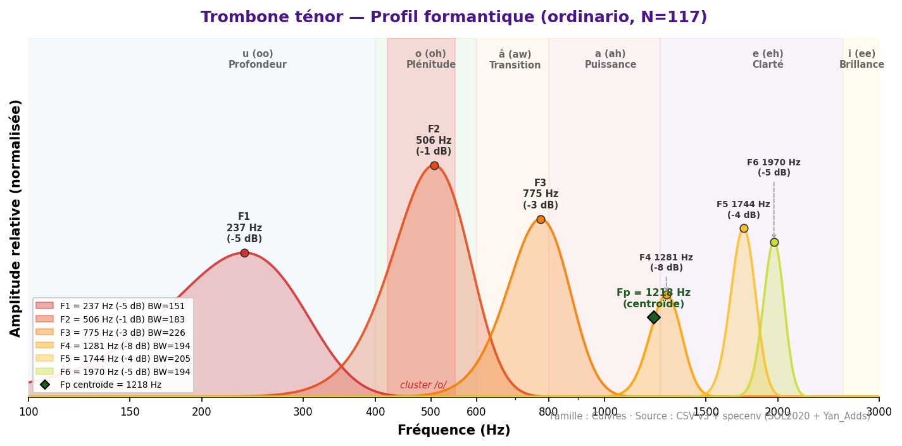
◆ Fp (centroïde) = 1218 Hz
| Source | F1 (Hz) | F2 (Hz) | F3 (Hz) | F4 (Hz) | Voyelle | N | Accord |
|---|---|---|---|---|---|---|---|
| Backus (1969) | 500 | — | — | — | — | — | note |
| Giesler (1985) | 520–600 | — | — | — | o-ähnlich | — | note |
| Meyer (2009) | 480–600 | ~1 200 | — | — | o (oh) | — | note |
| SOL2020 (Fp) | 491 ±137 | 1 218 ±312 | 2 310 | — | o (oh) | 41 | note |
| Pipeline v22 | 237 | — | — | — | u | 117 | réf. |
| Technique | N | F1 | F2 | F3 | F4 | F5 | F6 |
|---|---|---|---|---|---|---|---|
| brassy | 31 | 495 | 786 | 1 270 | 1 561 | 1 863 | 2 358 |
| brassy_to_ordinario | 8 | 484 | 786 | 1 260 | 1 561 | 1 884 | 2 638 |
| chromatic_scale | 1 | 226 | 484 | 775 | 1 001 | 1 572 | — |
| crescendo | 33 | 226 | 506 | 808 | 1 281 | 1 809 | 2 175 |
| crescendo_to_decrescendo | 37 | 226 | 495 | 764 | 1 475 | 1 776 | 2 121 |
| decrescendo | 33 | 495 | 775 | 1 109 | 1 400 | 1 820 | 2 143 |
| flatterzunge | 105 | 237 | 517 | 786 | 1 292 | 1 604 | 2 100 |
| flatterzunge_no_mouthpiece | 4 | 592 | 1 174 | 1 755 | 2 218 | 2 896 | 3 338 |
| flatterzunge_to_ordinario | 33 | 226 | 517 | 775 | 1 292 | 1 636 | 1 970 |
| glissando | 30 | 215 | 484 | 743 | 1 270 | 1 281 | — |
| note_lasting | 34 | 226 | 495 | 786 | 1 314 | 1 647 | 2 100 |
| ordinario | 117 | 237 | 506 | 775 | 1 281 | 1 744 | 1 970 |
| ordinario_no_mouthpiece | 10 | 624 | 915 | 1 249 | 1 636 | 1 960 | 2 627 |
| ordinario_to_brassy | 29 | 495 | 797 | 1 238 | 1 561 | 1 852 | 2 401 |
| ordinario_to_flatterzunge | 29 | 215 | 506 | 764 | 1 303 | 1 561 | 1 863 |
| pedal_tone | 22 | 237 | 495 | 743 | 1 260 | 1 550 | 2 132 |
| sforzato | 66 | 484 | 764 | 1 077 | 1 464 | 1 830 | 2 175 |
| slap_pitched | 12 | 194 | 506 | 764 | 1 314 | 2 132 | 2 153 |
| staccato | 37 | 226 | 495 | 775 | 1 292 | 1 863 | 2 175 |
| Instrument associé | F1 (instrument) | F1 (associé) | Écart | Qualité | Rapport de tessiture | Commentaire |
|---|---|---|---|---|---|---|
| Tuba basse | 237 | 226 | Δ=11 Hz | Quasi-parfaite | Octave | Δ=11 Hz — cluster /u/ cuivres graves |
| Tuba contrebasse | 237 | 226 | Δ=11 Hz | Quasi-parfaite | Octave | Δ=11 Hz — cluster /u/ cuivres graves |
| Contrebasson | 237 | 226 | Δ=11 Hz | Quasi-parfaite | Unisson | Δ=11 Hz — cluster /u/ bois-cuivres |
| Trombone basse | 237 | 258 | Δ=21 Hz | Quasi-parfaite | Unisson | Section trombone — homogénéité /u/ |
| Cor anglais | 237 | 452 | Δ=215 Hz | Complémentaire | Octave | Trombone /u/, cor anglais /o/ — complémentarité |
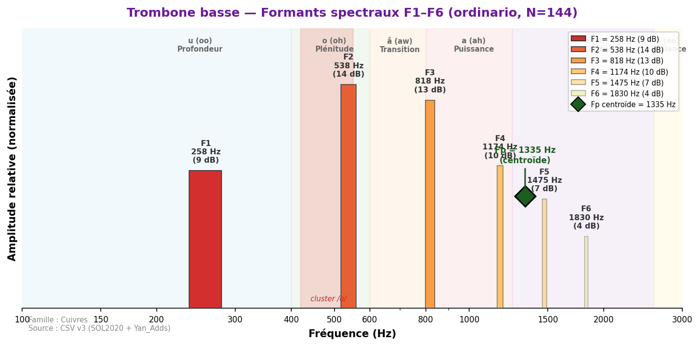
◆ Fp (centroïde) = 1335 Hz
| Source | F1 (Hz) | F2 (Hz) | F3 (Hz) | F4 (Hz) | Voyelle | N | Accord |
|---|---|---|---|---|---|---|---|
| Backus/Meyer | — | — | — | — | — | — | — |
| Yan_Adds (Fp) | 894 ±257 | 1 496 ±292 | 2 652 | — | a (ah) | 44 | note |
| Pipeline v22 | 258 | — | — | — | u | 144 | réf. |
| Technique | N | F1 | F2 | F3 | F4 | F5 | F6 |
|---|---|---|---|---|---|---|---|
| ordinario | 144 | 258 | 538 | 818 | 1 174 | 1 475 | 1 830 |
| Instrument associé | F1 (instrument) | F1 (associé) | Écart | Qualité | Rapport de tessiture | Commentaire |
|---|---|---|---|---|---|---|
| Trombone | 258 | 237 | Δ=21 Hz | Quasi-parfaite | Unisson | Section trombone — homogénéité /u/ |
| Contrebasson | 258 | 226 | Δ=32 Hz | Excellente | Unisson | Zone /u/ grave — cuivres-bois |
| Clarinette basse | 258 | 323 | Δ=65 Hz | Excellente | Unisson | Zone /u/ grave commune |
| Contrebasse | 258 | 172 | Δ=86 Hz | Bonne | Octave | Zone /u/ — fondation grave cuivres-cordes |
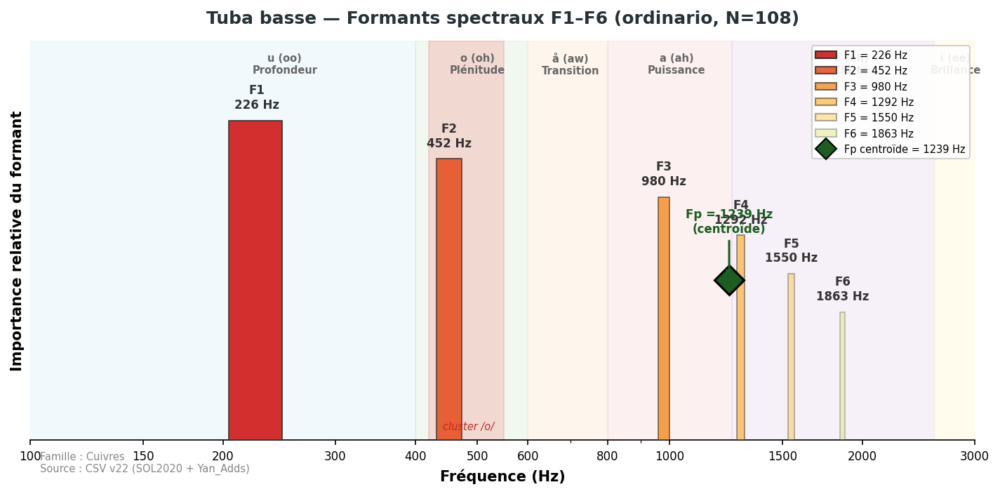
◆ Fp (centroïde) = 1239 Hz
| Source | F1 (Hz) | F2 (Hz) | F3 (Hz) | F4 (Hz) | Voyelle | N | Accord |
|---|---|---|---|---|---|---|---|
| Backus (1969) | 200–400 | — | — | — | — | — | ~ |
| Meyer (2009) | 210–250 | — | — | — | u (oo) | — | ~ |
| Giesler (1985) | 200–350 | — | — | — | u-ähnlich | — | ~ |
| SOL2020 (Fp) | 249 ±89 | 627 ±423 | 1 239 Fp | — | u (oo) | 41 | réf. |
| Pipeline v22 | 226 | 452 | — | — | u | 108 | réf. |
| Technique | N | F1 | F2 | F3 | F4 | F5 | F6 |
|---|---|---|---|---|---|---|---|
| bisbigliando | 36 | 215 | 431 | 958 | — | — | — |
| blow | 1 | 194 | 538 | 1 174 | 1 572 | — | — |
| brassy | 3 | 291 | 592 | 883 | 1 184 | 1 475 | 1 766 |
| breath | 1 | 183 | 797 | 1 184 | 1 486 | 2 024 | 4 877 |
| buzz | 4 | 312 | 958 | 1 195 | 1 260 | 1 561 | 1 863 |
| chromatic_scale | 2 | 248 | 506 | — | — | — | — |
| crescendo | 33 | 226 | 452 | 872 | 1 238 | 1 346 | 1 755 |
| crescendo_to_decrescendo | 33 | 215 | 452 | 990 | 1 163 | 1 324 | 1 583 |
| decrescendo | 33 | 237 | 463 | 1 001 | 1 292 | 1 852 | 1 841 |
| discolored_fingering | 18 | 194 | 635 | 1 055 | 1 270 | 1 604 | 1 712 |
| discolored_fingering_quartertones | 9 | 183 | 614 | 1 130 | 1 346 | 1 669 | 1 970 |
| exploding_slap_pitched | 1 | 194 | 388 | 689 | 969 | 1 529 | — |
| exploding_slap_unpitched | 1 | 205 | 549 | 1 206 | — | — | — |
| filtered_by_voice | 1 | 291 | 829 | — | — | — | — |
| flatterzunge | 72 | 215 | 452 | 1 001 | 1 120 | — | — |
| flatterzunge_and_voice_unison | 35 | 226 | 452 | 969 | 1 130 | — | — |
| flatterzunge_to_ordinario | 33 | 215 | 463 | 990 | 1 174 | — | — |
| glissando | 30 | 215 | 431 | 743 | 1 066 | — | — |
| growl | 2 | 334 | 1 227 | 1 249 | — | — | — |
| inhaled | 1 | 754 | 894 | 1 357 | 2 013 | 2 315 | 2 595 |
| kiss | 1 | 302 | 614 | 958 | — | — | — |
| multiphonics | 3 | 215 | 452 | — | — | — | — |
| ordinario | 108 | 226 | 452 | 980 | 1 292 | 1 550 | 1 863 |
| ordinario_high_register | 15 | 431 | 786 | 1 260 | 1 658 | 1 970 | 2 627 |
| ordinario_quartertones | 35 | 215 | 431 | 980 | — | — | — |
| ordinario_to_flatterzunge | 33 | 215 | 452 | 1 001 | 1 270 | — | — |
| pedal_tone | 30 | 205 | 441 | 980 | 1 270 | 1 529 | — |
| percussion_embouchure | 1 | 226 | — | — | — | — | — |
| play_and_sing_aug_forth_up | 5 | 226 | 431 | 1 066 | 1 378 | — | — |
| play_and_sing_fifth_up | 5 | 215 | 452 | 872 | 1 163 | — | — |
| play_and_sing_glissando | 1 | 226 | — | — | — | — | — |
| play_and_sing_maj_seventh_up | 5 | 237 | 495 | 1 249 | — | — | — |
| play_and_sing_min_second_up | 4 | 302 | 441 | 883 | — | — | — |
| play_and_sing_unison | 21 | 237 | 452 | 969 | 1 249 | 1 540 | — |
| sforzato | 33 | 226 | 452 | 1 012 | 1 292 | 1 572 | 1 787 |
| single_tonguing | 36 | 215 | 441 | 990 | — | — | — |
| slap_pitched | 33 | 205 | 646 | 732 | 1 001 | 1 281 | — |
| slap_unpitched | 9 | 215 | 538 | 711 | 1 077 | 1 270 | — |
| speak_into_instrument | 7 | 226 | 549 | 1 174 | 1 464 | 1 841 | 2 164 |
| staccato | 66 | 215 | 452 | 1 001 | 1 281 | 1 475 | 1 561 |
| trill_major_second_up | 36 | 215 | 431 | 840 | — | — | — |
| trill_minor_second_up | 36 | 215 | 431 | 851 | — | — | — |
| Instrument associé | F1 (instrument) | F1 (associé) | Écart | Qualité | Rapport de tessiture | Commentaire |
|---|---|---|---|---|---|---|
| Contrebasson | 226 | 226 | Δ=0 Hz | Quasi-parfaite ★ | Unisson | Δ=0 Hz — unisson formantique /u/ cuivres-bois |
| Tuba contrebasse | 226 | 226 | Δ=0 Hz | Quasi-parfaite ★ | Octave | Δ=0 Hz — unisson formantique /u/ cuivres |
| Trombone | 226 | 237 | Δ=11 Hz | Quasi-parfaite | Octave | Δ=11 Hz — cluster /u/ |
| Contrebasse | 226 | 172 | Δ=54 Hz | Excellente | Unisson | Fondation grave cuivres-cordes |
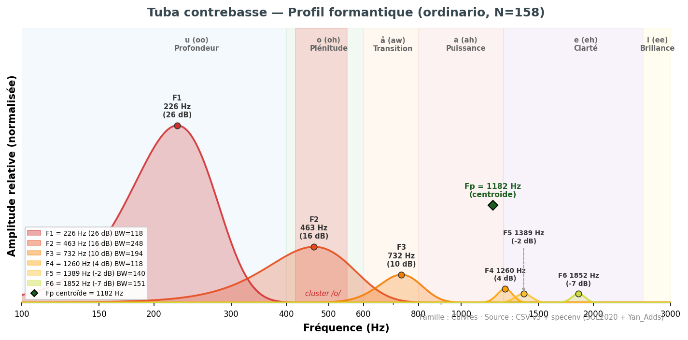
◆ Fp (centroïde) = 1182 Hz
| Source | F1 (Hz) | F2 (Hz) | F3 (Hz) | F4 (Hz) | Voyelle | N | Accord |
|---|---|---|---|---|---|---|---|
| Yan_Adds (Fp) | 471 ±155 | 1 304 ±576 | 2 317 | — | o (oh) | 78 | note |
| Pipeline v22 | 226 | — | — | — | u | 135 | réf. |
| Technique | N | F1 | F2 | F3 | F4 | F5 | F6 |
|---|---|---|---|---|---|---|---|
| flatterzunge | 32 | 215 | 463 | 721 | 1 023 | 1 432 | 1 561 |
| ordinario | 135 | 226 | 463 | 732 | 1 260 | 1 389 | 1 852 |
| Instrument associé | F1 (instrument) | F1 (associé) | Écart | Qualité | Rapport de tessiture | Commentaire |
|---|---|---|---|---|---|---|
| Contrebasson | 226 | 226 | Δ=0 Hz | Quasi-parfaite ★ | Unisson | Δ=0 Hz — unisson /u/ cuivres-bois |
| Tuba basse | 226 | 226 | Δ=0 Hz | Quasi-parfaite ★ | Octave | Δ=0 Hz — unisson /u/ cuivres graves |
| Trombone | 226 | 237 | Δ=11 Hz | Quasi-parfaite | Octave | Δ=11 Hz — cluster /u/ trombone sonne au-dessus |
| Contrebasse | 226 | 172 | Δ=54 Hz | Excellente | Octave | Fondation grave extrême /u/ |
Les sourdines modifient profondément le profil formantique. Résultats analysés uniquement en technique ordinario (ou ordinario_open/closed pour les wah).
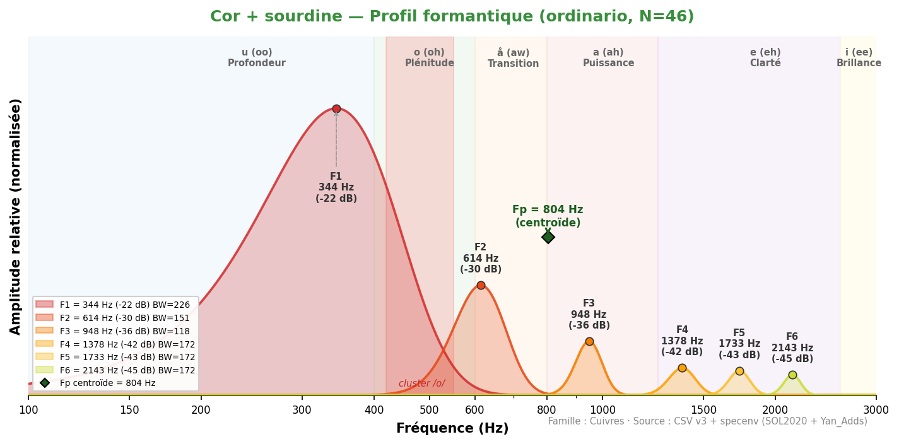
◆ Fp (centroïde) = 804 Hz
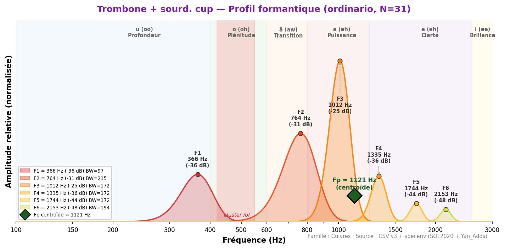
◆ Fp (centroïde) = 1121 Hz
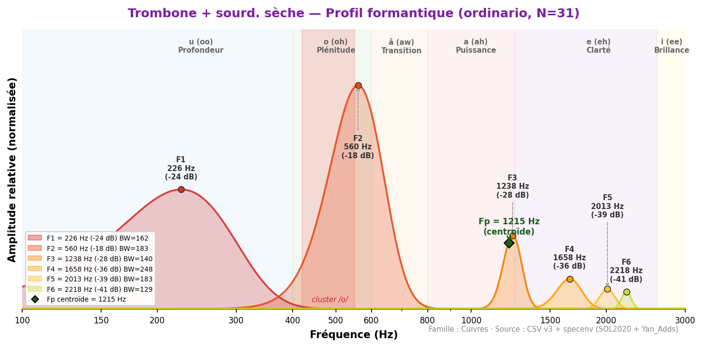
◆ Fp (centroïde) = 1215 Hz
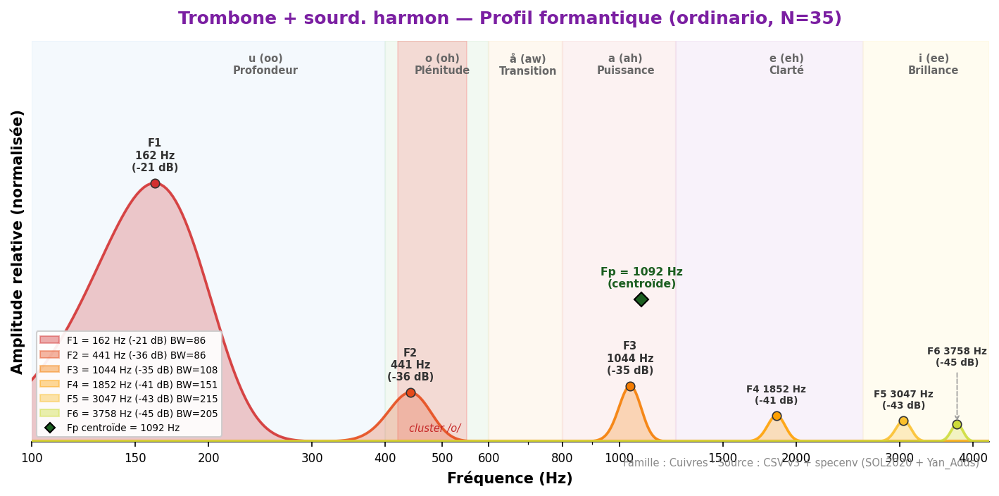
◆ Fp (centroïde) = 1092 Hz
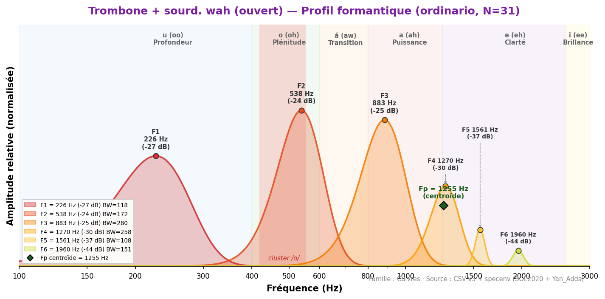
◆ Fp (centroïde) = 1255 Hz
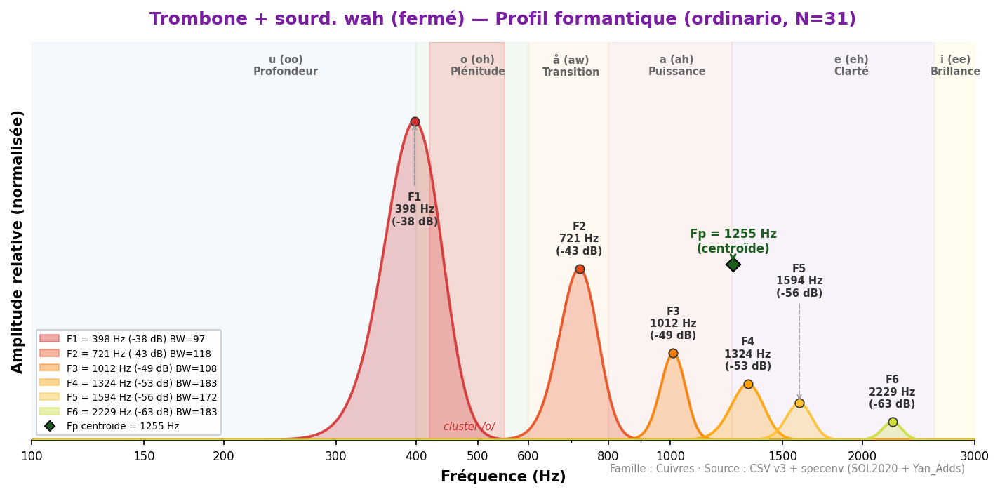
◆ Fp (centroïde) = 1255 Hz
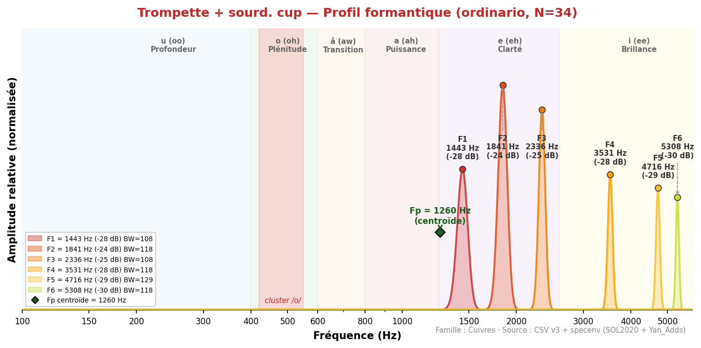
◆ Fp (centroïde) = 1260 Hz
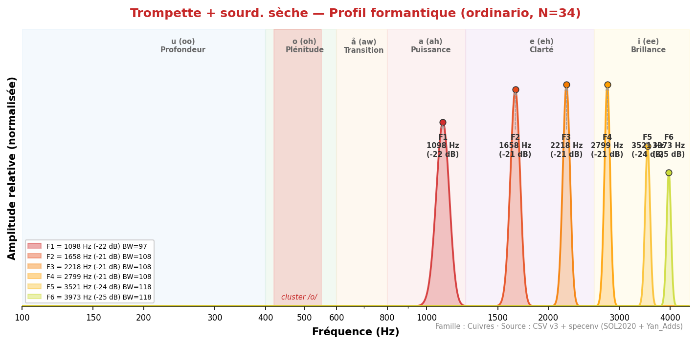
◆ Fp (centroïde) = 1084 Hz
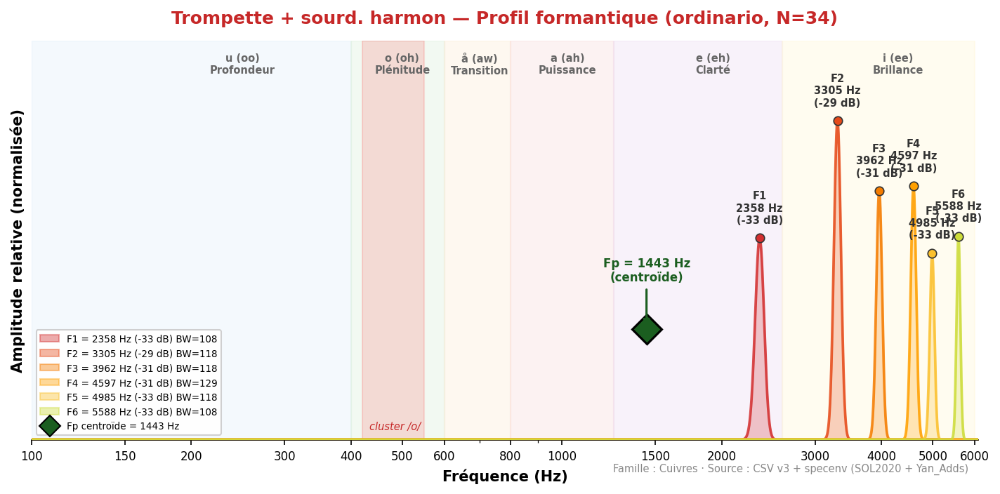
◆ Fp (centroïde) = 1443 Hz
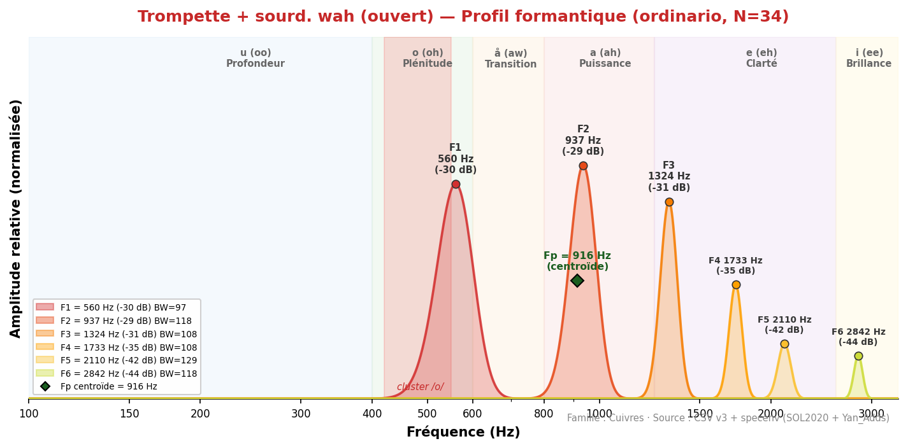
◆ Fp (centroïde) = 916 Hz
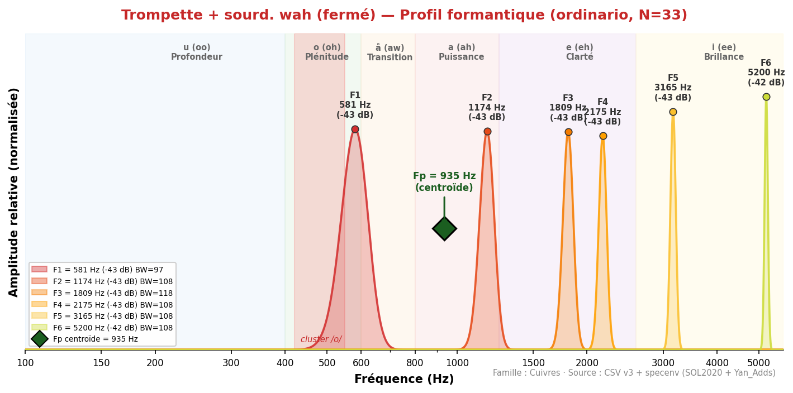
◆ Fp (centroïde) = 935 Hz
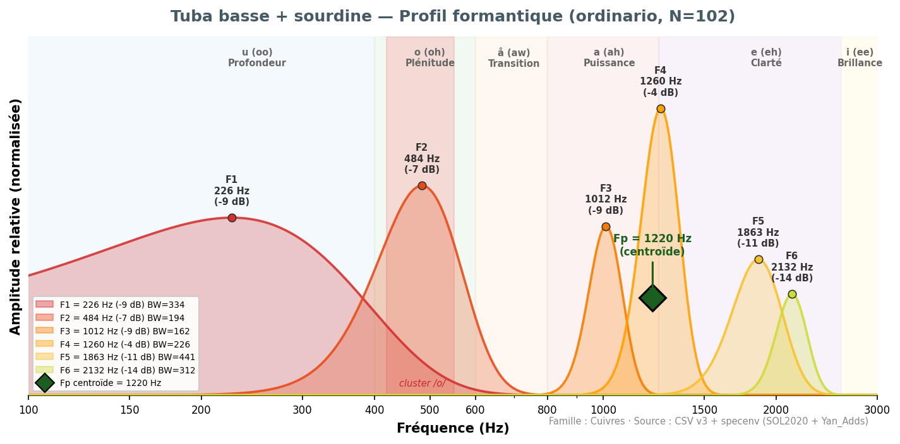
◆ Fp (centroïde) = 1220 Hz
Source : formants_all_techniques.csv (SOL2020 IRCAM) + formants_yan_adds.csv · pipeline v22 validé.
Références : Backus (1969) · Giesler (1985) · Meyer (2009).